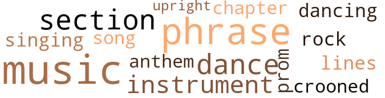

Black Heat, by Turner, Peter (1970)
25 music-related terms matched in this text.
Most frequent terms in this topic: music (5); phrase (4); section (2); dance (2); instrument (2)
chapter.n.01
Definition: a subdivision of a written work; usually numbered and titled
| word | sentence |
|---|---|
| chapter | She is a secret agent for the East Village chapter of the Ku KIux Klan . |
croon.v.01
Definition: sing softly
| word | sentence |
|---|---|
| crooned | " It 's up to you , honey , " she crooned , putting her head on his shoulder . |
dance.n.01
Definition: an artistic form of nonverbal communication
| word | sentence |
|---|---|
| dance | He felt a quiver dance through her , and he was simultaneously aware that his erection had come fully up again . |
| dance | Hips rolled into a long , side-to-side dance , drawing his prick like a thousand hands . . . or a hundred and alive and racing ahead to the next fire fight , the next battle the next hill to conquer . |
dance.v.02
Definition: move in a pattern; usually to musical accompaniment; do or perform a dance
| word | sentence |
|---|---|
| dancing | " I 'll go dancing with you if you want . " |
hymn.n.01
Definition: a song of praise (to God or to a saint or to a nation)
| word | sentence |
|---|---|
| anthem | I was a one-hundred-per cent American ; patriotism , flag , national anthem , and all . |
music.n.01
Definition: an artistic form of auditory communication incorporating instrumental or vocal tones in a structured and continuous manner
| word | sentence |
|---|---|
| music | The noise of talk and typewriting was augmented by rock music coming from somewhere on the floor , playing at top volume . |
| music | The insistent sound of music pulsated through the air on a strong rhythmic beat . |
| music | Lucidly , he thought , with that damned music playing so loudly as it did all day , no one else heard her . |
| music | The music started again , and there was a minute or so of talk about the new sari Maryann was wearing . |
| music | He thought that the door he had come through must be insulated since none of the talk or the music came through . |
musical_instrument.n.01
Definition: any of various devices or contrivances that can be used to produce musical tones or sounds
| word | sentence |
|---|---|
| instrument | She was going to be the instrument of his pleasure and his anger ! |
| instrument | Continuously , firmly , and with a final effort ... all the way into her , and he knew she had never had an instrument of that size in her before . |
phrase.n.02
Definition: a short musical passage
| word | sentence |
|---|---|
| phrase | " You should think about getting married , " his mother said , picking out the one phrase . |
| phrase | That you were an . . . ' equal partner , ' I think the phrase was . |
| phrase | The phrase became a stuck needle when they reached St. Mark 's Place and its flamboyant shops . |
| phrase | What a depressing phrase ! |
promenade.n.01
Definition: a formal ball held for a school class toward the end of the academic year
| word | sentence |
|---|---|
| prom | What kind of prom - ises had Vicky made to him ? |
rock_'n'_roll.n.01
Definition: a genre of popular music originating in the 1950s; a blend of black rhythm-and-blues with white country-and-western
| word | sentence |
|---|---|
| rock | The noise of talk and typewriting was augmented by rock music coming from somewhere on the floor , playing at top volume . |
section.n.01
Definition: a self-contained part of a larger composition (written or musical)
| word | sentence |
|---|---|
| section | It 's an old section of New York , very arty and mod and swinging . |
| section | As each guy remounted the girl , the rest of them became some kind of insane cheering section , urging him on to an ever-more-violent tempo . |
singing.n.01
Definition: the act of singing vocal music
| word | sentence |
|---|---|
| singing | Maybe shoeshining was a natural talent for blacks , like dancing and singing . |
song.n.01
Definition: a short musical composition with words
| word | sentence |
|---|---|
| song | By the way , do you still raise your voice in song ? " |
tune.n.01
Definition: a succession of notes forming a distinctive sequence
| word | sentence |
|---|---|
| lines | She could almost feel his skin against her palms as she studied the partly revealed lines of his body . |
upright.n.02
Definition: a piano with a vertical sounding board
| word | sentence |
|---|---|
| upright | Al Park was sitting at the center of the room in the traditional yoga position ; bolt upright , feet tucked under his thighs , eyes closed . |
119 violence-related terms matched in this text.
Most frequent terms in this topic: anger (18); fighting (9); fight (8); kill (7); fury (6)
abrasion.n.01
Definition: an abraded area where the skin is torn or worn off
| word | sentence |
|---|---|
| scratches | " Although we were all aware of the blood all over her legs , the scratches and bruises on her body , and her hys - terical moaning , not one of us hesitated to take his place in the strict descending order of military rank to fuck her more brutally than the man before , " When she finally did begin to talk , we had to pull the guy out of her who was in the saddle at the moment , and shake him up a bit to bring him around to some - thing approaching normality . |
anger.n.01
Definition: a strong emotion; a feeling that is oriented toward some real or supposed grievance
| word | sentence |
|---|---|
| anger | It came out brutally , with real anger behind it . |
| anger | Again , she thought he might keep right on walking , and saw an expression . . . almost anger in his eyes ... as she held the front door open for him . |
| anger | The anger he was showing was not feigned . |
| anger | She saw the anger fade from his face . |
| anger | Turning your anger on people who hate only makes their nasty suspi - cions more valid . |
| anger | It had been a perfectly innocent question , Peter knew , but suddenly his insides tensed up and that anger he had lost the last few days began to build again . |
| anger | One or two of the guys had com - pletely stripped off their uniforms , working themselves up into a fury of sex and anger . |
| anger | Then , she recognized the basis of her anger . |
| anger | At those times , he would start to build up anger again . |
| anger | Peter felt the anger rushing through him . |
| anger | His anger mingled with the horniness she had already built in him . |
| anger | It was as if the anger which was compounding his sexu - al need was being concentrated in that area on his flesh that was in direct contact with Vicky . |
| anger | She was going to be the instrument of his pleasure and his anger ! |
| anger | Then , responding to a wave of anger , he began to dig his fingers into the one sensitive nipple , while his teeth nipped at the other . |
| anger | The spurting seemed almost endless , and the anger mounted in him with each pumping ejaculation . |
| anger | Even when the sensations of pleasure began to make themselves aware again , Peter continued to be driven by a desperate anger . |
| anger | Both of those other emotions were waiting until the force of his anger subsided . |
| anger | He could feel the anger rising in him . |
bleeding.n.01
Definition: the flow of blood from a ruptured blood vessel
| word | sentence |
|---|---|
| bleeding | I bet you put cobwebs on cuts to stop the bleeding . " |
bruise.n.01
Definition: an injury that doesn't break the skin but results in some discoloration
| word | sentence |
|---|---|
| bruises | " Although we were all aware of the blood all over her legs , the scratches and bruises on her body , and her hys - terical moaning , not one of us hesitated to take his place in the strict descending order of military rank to fuck her more brutally than the man before , " When she finally did begin to talk , we had to pull the guy out of her who was in the saddle at the moment , and shake him up a bit to bring him around to some - thing approaching normality . |
contemn.v.01
Definition: look down on with disdain
| word | sentence |
|---|---|
| despised | He despised any kind of phoniness , and was able to spot it intuitively . |
craze.n.02
Definition: state of violent mental agitation
| word | sentence |
|---|---|
| fury | In fact , since Peter had started writing for the paper , Al had immersed himself in an almost continuous fury of writing , telephone calls , late-hour conferences and , when there was time , private conversations with Peter . |
draw.v.23
Definition: pull (a person) apart with four horses tied to his extremities, so as to execute him
| word | sentence |
|---|---|
| drawing | His fingers took hold of the nipples , now fully dis - tended , and twirled and teased them with a continuous circular motion . . . drawing up on them , flicking them gently , pushing down against them . |
erase.v.01
Definition: remove from memory or existence
| word | sentence |
|---|---|
| erased | He was aware of the control she exerted over him , but simultaneously he erased any objection his mind might offer . |
| erase | They were brought up differently , and would never be able to erase the consciousness of that difference . |
| erased | However , as blackness erased the scene , he was no longer positive of what he had looked at . |
ferociousness.n.01
Definition: the trait of extreme cruelty
| word | sentence |
|---|---|
| brutality | And , it 's more than being turned off by the ugliness and brutality of a meaningless war . |
fight.n.02
Definition: the act of fighting; any contest or struggle
| word | sentence |
|---|---|
| fighting | And I was where the fighting was almost the whole year . " |
fight.n.05
Definition: a boxing or wrestling match
| word | sentence |
|---|---|
| fight | Hips rolled into a long , side-to-side dance , drawing his prick like a thousand hands . . . or a hundred and alive and racing ahead to the next fire fight , the next battle the next hill to conquer . |
| fights | They recalled some of the toughest moments of patrol , fire fights , VC attacks ; but , in retrospect , Peter could no longer sense the terrible fear and despair which had engulfed him , overseas . |
| fight | Maybe the guys in Saigon or some of the other big supply bases can afford to carry their rot - ten little hates along with them , but not where the fight - ing is . |
fight.v.02
Definition: fight against or resist strongly
| word | sentence |
|---|---|
| defending | " You mean you 've been out there defending us at Camp Lejeune , or some such awful place ? " |
| fight | Still , she had never had to fight too hard to get her own way . |
| fight | The whole time he had to fight the urge to start moving his hips ; to stifle the masculine need to expand his energy in a battering - | ram drive . |
| fighting | Once people found out what peace is really like , they would never go back to fighting . " |
| fighting | " Do you enjoy fighting ? " |
| fight | They 'd rather fight than eat or sleep . |
| defending | Here he was defending the very ones he had spent the whole week avoiding . |
| defending | It was worth defending ; if not for myself alone , then for my kid brother or the gen - eration that will be coming along in the next ten years . |
| fighting | " Worse than that , when you do run into the trained Commie soldiers , they may be fighting with twentieth century weapons , but they are operating on sixteenth century rules . |
| fighting | You have to kill them or maim them to make them stop fighting . |
| fight | " I do n't know if they are actually told they must win or die , and never admit defeat ; but that 's the way they fight . |
| fight | " Is it very different from the way you had to fight , Pete ? " |
| fighting | They will keep on fighting down to the last drop of their own blood . |
| fight | " You do n't fight fire with fire , without destroying more than you save . |
| Fight | I am back from Vietnam , and I Wont Return to Fight and Kill Helpless Civilians ! |
| fighting | He had been fighting a terrible battle , rim - ing , attacking , straining to keep himself alive in the face of an enemy he could not understand or outwit . |
| fighting | No one who had spent a year of fighting in Vietnam could still be trapped by middle-class Ameri - can ' ideals . ' |
| fighting | " I was going to name some of my buddies in the Corps . . . the guys who were fighting with me in Nam . |
frustration.n.03
Definition: a feeling of annoyance at being hindered or criticized
| word | sentence |
|---|---|
| frustration | The world was starting to narrow down to the place where their two bodies were joined , and all the tempta - tion and frustration of last night and this afternoon was being transformed into an electricity running through his legs , his ass , his balls ; right out to the end of his j dick . |
| frustrations | Maybe this was what he really needed as an antidote to Vietnam , the Marines , the year at college , and all the problems and fears and frustrations which had been plaquing him . |
| frustration | The frustration welled up and over him , and he knew part of his reaction was plain on his face . |
| frustration | Now , her expression was one of confusion , frustration . |
| frustration | He pumped in a paroxysm of frustration . |
fury.n.01
Definition: a feeling of intense anger
| word | sentence |
|---|---|
| fury | Then , finally she was on top of him , forcing herself further down in a mounting fury of passionate movement . |
| fury | You see it , you 're a part of it , you almost get drowned in the fury of it , and all of a sudden , you are it ! |
| fury | One or two of the guys had com - pletely stripped off their uniforms , working themselves up into a fury of sex and anger . |
| fury | He knew he was going to come again , and the fury of his body intensified . |
| fury | The cold fury that had filled his veins might fade away if he waited too long ; might dissipate into remorse or sadness , he knew . |
hate.n.01
Definition: the emotion of intense dislike; a feeling of dislike so strong that it demands action
| word | sentence |
|---|---|
| hatred | They seem to act on one single emotion ; hatred . |
| hatred | Total , unchangeable , murderous hatred . |
| hatred | He was telling things the way they were , the way he had seen them , letting the reader judge the errors , the weaknesses , the stupidities which created wars , dep - rivations and hatred and then turned all these awful situations into unending nightmares . |
| hatred | For an instant , she was the naked , defenseless Vietcong girl in the jungle , and he , Peter , was all of the men venting their passion and their hatred upon her . |
| hatred | A weird combination of lust and hatred twisted inside of him . |
hate.v.01
Definition: dislike intensely; feel antipathy or aversion towards
| word | sentence |
|---|---|
| hate | " Why do you feel Olivia has reason to hate me ? " |
| hate | Turning your anger on people who hate only makes their nasty suspi - cions more valid . |
| hated | " You imagined this couple hated you because they were sure the only reason we were together was to get into bed as soon as possible . " |
| hate | They can only hate you if they think they are protecting me . |
| hate | " I hate to think of lit - tle kids being forced to work . |
| hated | Vicky had said that Olivia hated her . |
| hated | Everyone who hated you acted so damn gentlemanly about it . |
| hates | Maybe the guys in Saigon or some of the other big supply bases can afford to carry their rot - ten little hates along with them , but not where the fight - ing is . |
| hate | And , he felt instinctively , she would hate the term " colored . " |
indignation.n.01
Definition: a feeling of righteous anger
| word | sentence |
|---|---|
| indignation | A healthy helping of indignation could add even more fire to that first time with Pete . |
injury.n.01
Definition: any physical damage to the body caused by violence or accident or fracture etc.
| word | sentence |
|---|---|
| hurt | And , although she did not say it , Peter knew she would never consider going out socially in the company of white people She did n't act hurt or insulted , but he felt she was a little less responsive in his bed that afternoon . |
jealousy.n.01
Definition: a feeling of jealous envy (especially of a rival)
| word | sentence |
|---|---|
| jealousy | I did n't think jealousy was your bag , Olivia . |
| jealousy | It was only in the last day or so that she had begun to wonder which one of them she was direct - ing the jealousy toward . |
| jealousy | Too many times had she seen the unhappiness that possessiveness and jealousy invariably created . |
kick_back.v.02
Definition: spring back, as from a forceful thrust
| word | sentence |
|---|---|
| kicking | Al was kicking off his worn sandals , and Victoria was removing her low-heeled shoes to put them on a white rubber mat to one side of the door of the rear apartment . |
kill.v.10
Definition: cause the death of, without intention
| word | sentence |
|---|---|
| killed | Charles Turner had been killed by a toppling construction crane when Peter was sixteen . |
| kill | " I thought you could help Peter kill some time till I 'm free . " |
| kill | " We were only going to the movies to kill time . |
| killed | They talked about everyone in their company , including those who had been killed . |
| kill | You have to kill them or maim them to make them stop fighting . |
| kill | We 're trained to kill , it 's true , but the purpose is to immobilize the enemy . |
| killing | " I think killing must be like a disease . |
| Killing | Killing that is directed at civilians as well as soldiers ; children as much as grown - ups . |
| killed | Let 's give her a hundred strokes for every guy she 's killed , and a thousand for every one she 's ruined for the rest of his life . |
| kill | I 'm not a machine to kill people . |
| Kill | I am back from Vietnam , and I Wont Return to Fight and Kill Helpless Civilians ! |
| kill | And , the only way I can kill it is to make my relationship with you the same as it is with all the others . |
| kill | " Stand still or I 'll kill youl " He was back in the jungle . |
killing.n.01
Definition: an event that causes someone to die
| word | sentence |
|---|---|
| killing | I mean sense - less , endless , unrelieved killing . |
lynching.n.01
Definition: putting a person to death by mob action without due process of law
| word | sentence |
|---|---|
| lynching | Her motto is , ' If lynching is good enough for Georgia , it 's good enough for New York " He turned back toward her . |
malice.n.01
Definition: feeling a need to see others suffer
| word | sentence |
|---|---|
| spite | In spite of Al 's nonchalant attitude , Peter felt himself tense . |
| spite | In spite of the problems , everything I had was from this country and this system . |
| spite | She had believed it during the first weeks , even months . . . Then , the shallowness of it had come clear in spite of her attempts at denial : The boys . . . with nothing on their minds except finding an opening into an easy-mon - ey , lifetime career , and trying to get any girl within arm 's reach into the sack . |
musket_ball.n.01
Definition: a solid projectile that is shot by a musket
| word | sentence |
|---|---|
| balls | The world was starting to narrow down to the place where their two bodies were joined , and all the tempta - tion and frustration of last night and this afternoon was being transformed into an electricity running through his legs , his ass , his balls ; right out to the end of his j dick . |
| balls | ' I 'll give him the one thing he 's busting his balls to get , and he 'll do anything I ask . ' " |
| ball | Continuing to look at Al , he crumbled and compressed the sheet of paper until it was a misshapen dirty ball . |
pain.v.02
Definition: cause emotional anguish or make miserable
| word | sentence |
|---|---|
| hurt | If I did something to hurt you , it was thoughtless of me . |
| hurt | Was there more to hurt him here in his own home town than there had been in that shapeless jungle of a country ? |
| hurt | If I am doing something to hurt you , I want to know , and I 'll stop it . |
punch.v.01
Definition: deliver a quick blow to
| word | sentence |
|---|---|
| plugged | That day , I knew I had really plugged into the high voltage line " " You 're not a recruiting man , are you , P.T. ? " |
resentment.n.01
Definition: a feeling of deep and bitter anger and ill-will
| word | sentence |
|---|---|
| bitterness | He was showing none of the bitterness which spoiled so many of the articles in the paper . |
rifle.n.01
Definition: a shoulder firearm with a long barrel and a rifled bore
| word | sentence |
|---|---|
| rifle | His hands closed instinctively , to bring his rifle into instant readiness . |
rip.v.04
Definition: criticize or abuse strongly and violently
| word | sentence |
|---|---|
| ripped | " Because the rest of the world is what it is , freedom is more than treason , it is punishable by brutal excision ; ripped out of you alive and screaming by the minions of The Order . |
shoot.v.02
Definition: kill by firing a missile
| word | sentence |
|---|---|
| shot | Every one of us could have been shot to hell if a VC pa - trol had come along in the two hours or so we had been there . |
slaughter.n.03
Definition: the savage and excessive killing of many people
| word | sentence |
|---|---|
| slaughter | Whenever there is battle contact , it be - comes a slaughter . |
stone.v.01
Definition: kill by throwing stones at
| word | sentence |
|---|---|
| stoned | Depending on how stoned they might be , they probably could not even distinguish the feel of your body and your sex pressing against them and into them . |
suicide.n.01
Definition: the act of killing yourself
| word | sentence |
|---|---|
| suicide | Is there a suicide complex lurking in the crev - ices of your involved mind ? " |
violence.n.01
Definition: an act of aggression (as one against a person who resists)
| word | sentence |
|---|---|
| violence | With all of their comradeship and love , Peter thought , they have no idea how to deal with violence . |
| violence | Not only different in details , but different in the quality of the violence involved . |
| violence | Nothing else in the world mattered except to continue the violence right through to its shat - tering conclusion . |
| violence | What a shock it must be for him to come back from that horror to find the country more than ever preoccupied with success , possessions and violence . |
weapon.n.01
Definition: any instrument or instrumentality used in fighting or hunting
| word | sentence |
|---|---|
| weapons | " Worse than that , when you do run into the trained Commie soldiers , they may be fighting with twentieth century weapons , but they are operating on sixteenth century rules . |
| weapon | I took the basic creative urges of sex and love , and turned them into the crudest kind of weapon . |
weapon.n.02
Definition: a means of persuading or arguing
| word | sentence |
|---|---|
| artillery | Certain types of enemy action are peculiar to the area ; suspected locations of artillery , mortars , equipment like that , and special problems . |
22 religion-related terms matched in this text.
Most frequent terms in this topic: hell (5); church (2); God (2); heaven (2); idol (2)
church.n.02
Definition: a place for public (especially Christian) worship
| word | sentence |
|---|---|
| church | They were model middle-class Negroes , long-time members of the NAACP , the PTA , and every neighborhood and church organization devoted to good , uplifting works . |
| church | Within the walls of their apartment there was no prob - lem greater than deciding what cake to bake for the next church supper . |
eden.n.01
Definition: any place of complete bliss and delight and peace
| word | sentence |
|---|---|
| heaven | " For heaven 's sake ! |
| heaven | " For heaven 's sake , if you 're a Marine you got to be a Marine . " |
god.n.03
Definition: a man of such superior qualities that he seems like a deity to other people
| word | sentence |
|---|---|
| God | " Why , for God 's sake ? |
| God | God damn , but he was going to try to get it out of him this time ! |
hell.n.01
Definition: any place of pain and turmoil
| word | sentence |
|---|---|
| hell | He would go home , take a shower , maybe get his rocks off , too . . . and stay the hell away from all parts of the white world . |
| hell | What in hell was wrong with him , anyway ? |
| hell | What the hell was the matter with Marty ? |
| hell | Every one of us could have been shot to hell if a VC pa - trol had come along in the two hours or so we had been there . |
| hell | Why in hell was he al - ways making promises to people which kept him trapped in uncomfortable , hopeless situations ? |
| hellhole | Now that they were out of that hellhole , he could expect nothing from them . |
hymn.n.01
Definition: a song of praise (to God or to a saint or to a nation)
| word | sentence |
|---|---|
| anthem | I was a one-hundred-per cent American ; patriotism , flag , national anthem , and all . |
idol.n.01
Definition: a material effigy that is worshipped
| word | sentence |
|---|---|
| idol | He consistently knocked down every idol , including his own , taking the wind out of everyone 's sails even as he seemed to be inviting angry reprisal . |
| idol | His sex organs were an idol she was paying homage to . |
jesus.n.01
Definition: a teacher and prophet born in Bethlehem and active in Nazareth; his life and sermons form the basis for Christianity (circa 4 BC - AD 29)
| word | sentence |
|---|---|
| Jesus | " Jesus Christ ! " he exclaimed , jumping to his feet , holding the beer can in front of him , unsuccessfully try - ing to hide his erection . |
messiah.n.01
Definition: any expected deliverer
| word | sentence |
|---|---|
| Christ | " Jesus Christ ! " he exclaimed , jumping to his feet , holding the beer can in front of him , unsuccessfully try - ing to hide his erection . |
| Christ | " For Christ 's sake , you and your hot pants . |
preacher.n.01
Definition: someone whose occupation is preaching the gospel
| word | sentence |
|---|---|
| preacher | He spread his arms in an inclusive gesture , and Peter saw the politician being replaced by the preacher . |
saint.n.02
Definition: person of exceptional holiness
| word | sentence |
|---|---|
| Saint | To Saint Mark 's Place and Second Avenue ? " |
worship.n.01
Definition: the activity of worshipping
| word | sentence |
|---|---|
| worship | It was an act of worship . |
yoga.n.01
Definition: Hindu discipline aimed at training the consciousness for a state of perfect spiritual insight and tranquility that is achieved through the three paths of actions and knowledge and devotion
| word | sentence |
|---|---|
| yoga | Al Park was sitting at the center of the room in the traditional yoga position ; bolt upright , feet tucked under his thighs , eyes closed . |